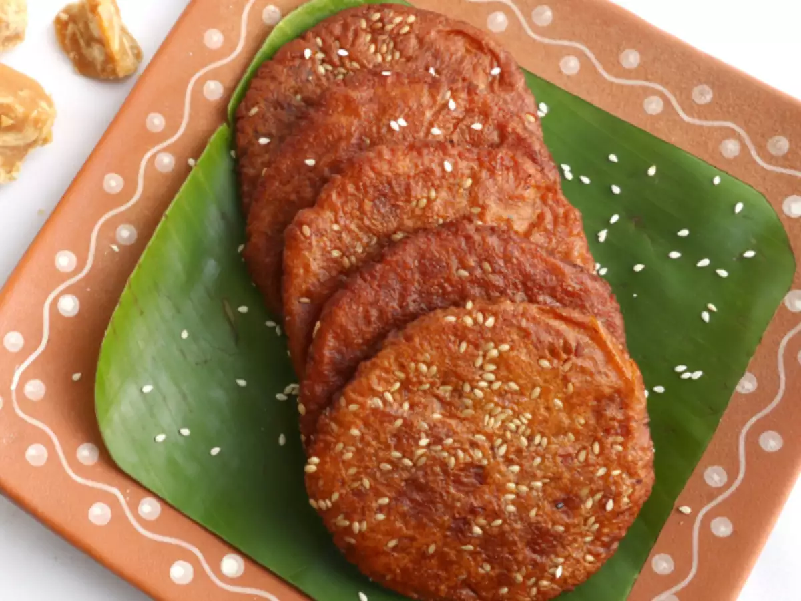
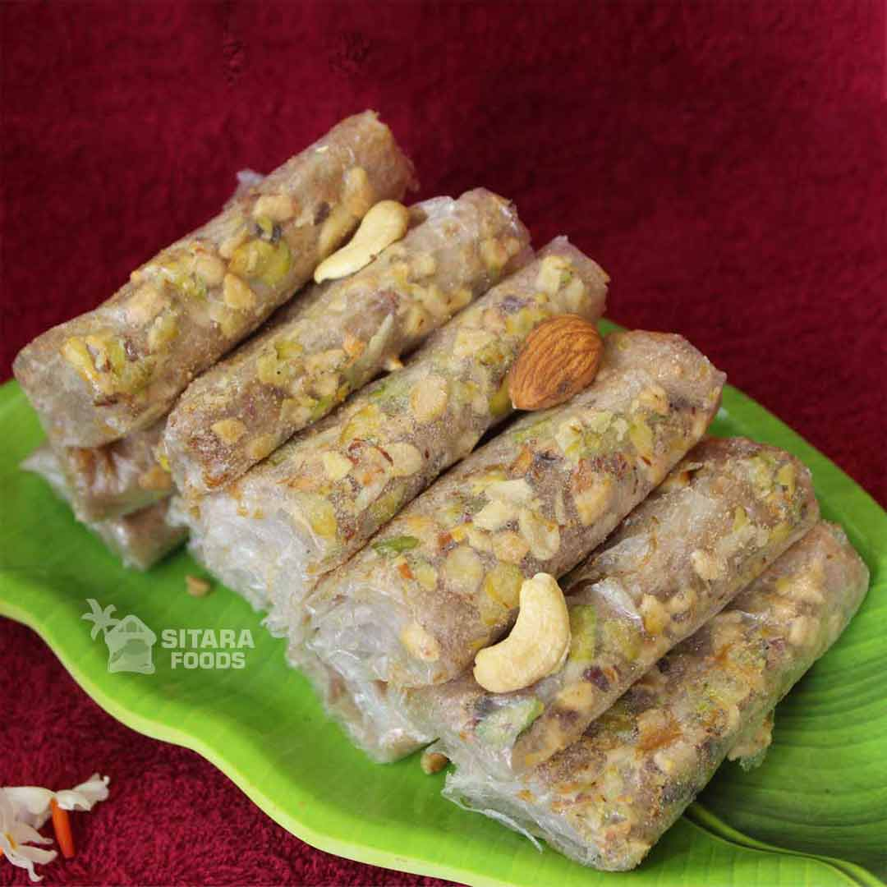

Ingredients:

| Episodes | Recipe-1 | Recipe-2 |
|---|---|---|
| 1-Pindi Vantalu(Flour-based Sweets) | Ariselu | Pootharekulu |
| 2-Sweets | Gulab Jamun | Rasmalia |
| 3-Street style | Manchurian | Hakka Noodles |
| 4-Briyani Secrets | Hyderabadi Briyani | Salan |

Grind the soaked and dried rice into a fine powder using a blender or grinder.Sift the rice flour to remove any lumps.
In a pan, combine the grated jaggery and water.Heat on medium heat until the jaggery melts completely and the mixture starts to simmer.Strain the syrup through a fine-mesh sieve to remove any impurities.Return the strained syrup to the pan and continue to cook on low heat until it reaches the "one-string consistency"
Remove the jaggery syrup from heat and let it cool slightly.Add cardamom powder and dried ginger powder (if using) to the syrup and mix well.Gradually add the rice flour to the jaggery syrup, stirring continuously to avoid lumps.CovMix until the dough comes together and forms a soft, pliable dough. and let it rest for at least 30 minutes or overnight. This allows the flavors to meld and makes the dough easier to work with.
Heat oil in a deep pan or kadai for deep frying.Grease your palms with a little ghee.Take a small portion of the dough (about the size of a lemon) and shape it into a ball.Place the dough ball on a lightly greased banana leaf or plastic sheet.Gently press down on the dough ball with your palm to form a thin, round disc.Sprinkle sesame seeds on top.
Carefully slide the Ariselu into the hot oil.Fry until golden brown on both sides, flipping occasionally.Remove the fried Ariselu from the oil using a slotted spoon and place them on a paper towel to absorb excess oil.

In a bowl, mix rice flour with enough water to make a smooth, thin batter. The consistency should be similar to buttermilk.Let the batter rest for at least 30 minutes.
Place an inverted pot on a stove and heat it over medium heat.Grease the bottom of the pot with ghee.
Dip a clean cloth into the rice flour batter.Quickly spread the cloth evenly on the hot pot's bottom.The batter will instantly cook and form a thin, translucent sheet.Carefully peel off the sheet using a spatula or your fingers.Repeat this process to make multiple sheets.
In a bowl, combine powdered sugar and chopped dry fruits.
Place a sheet of rice paper on a clean surface.Sprinkle a spoonful of the sugar-dry fruit mixture evenly on the sheet.Drizzle a little ghee over the mixture.Fold the sheet in half lengthwise.Then, fold it in half again to create a rectangle.Roll the rectangle tightly into a cylinder.
© [2024] [Bhavana]. All rights reserved.